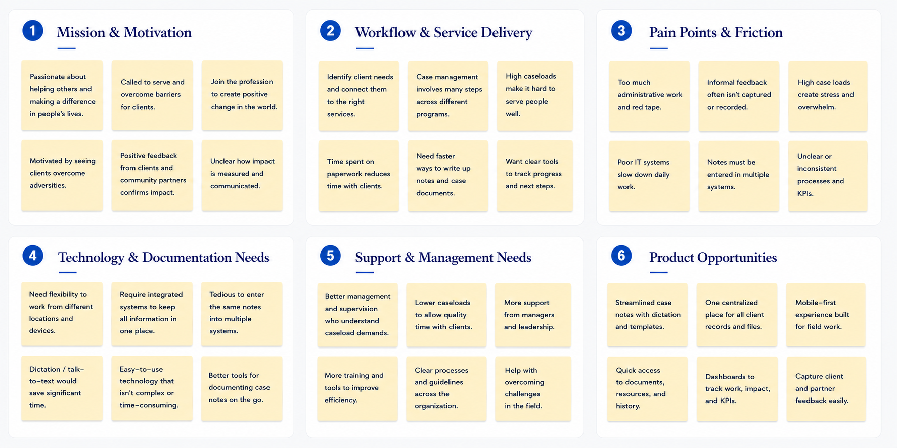
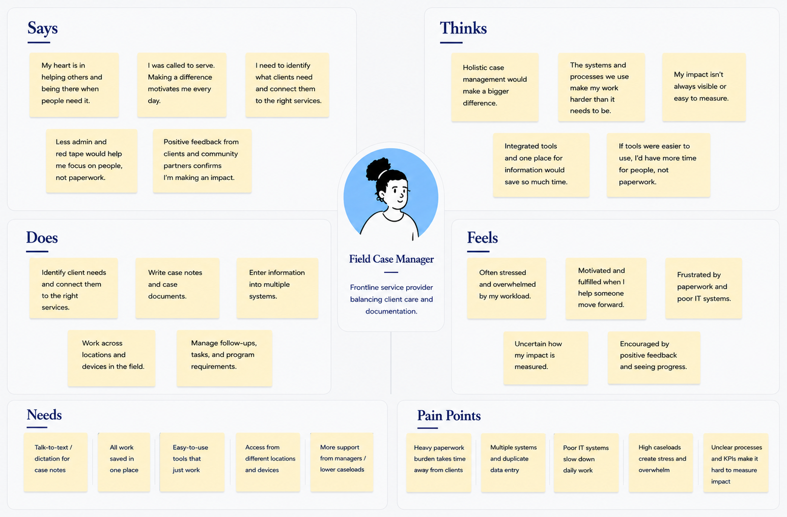
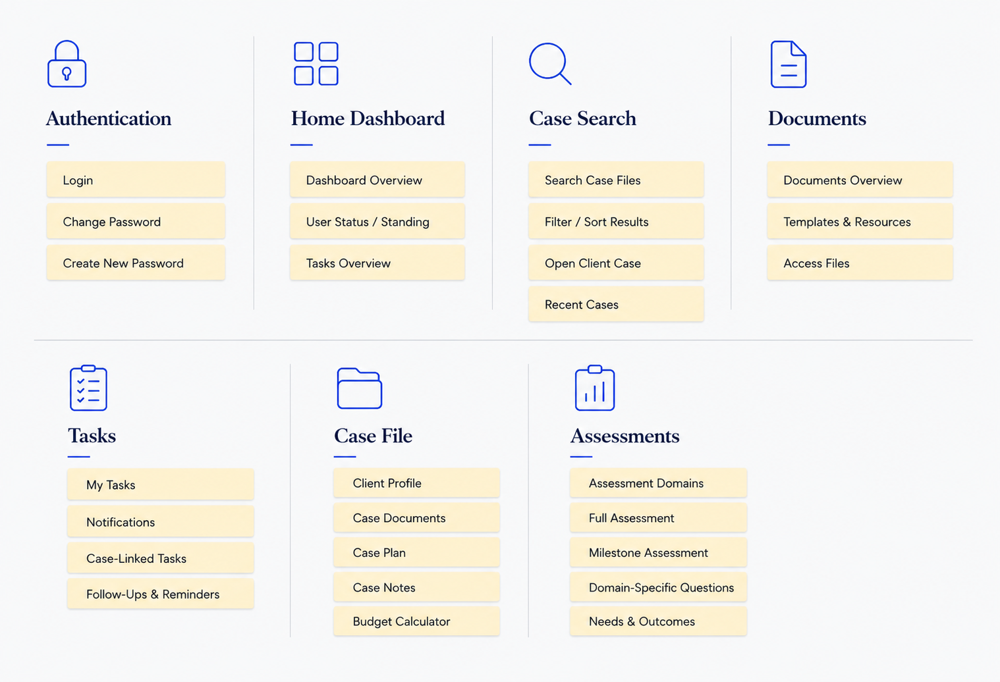
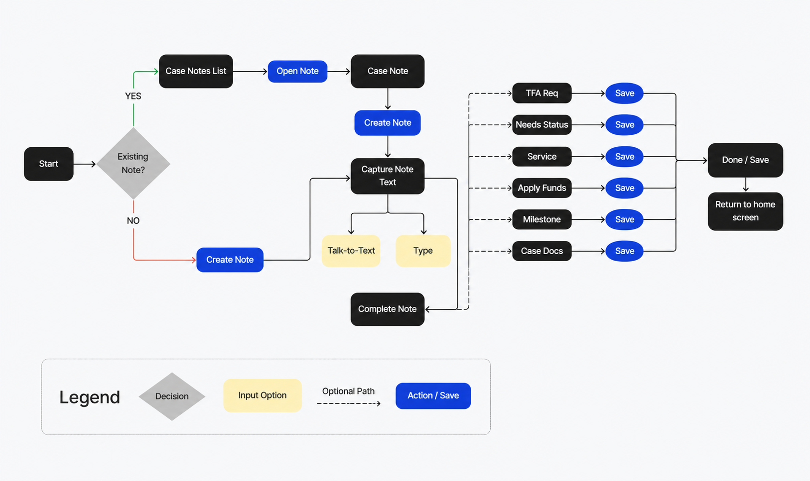
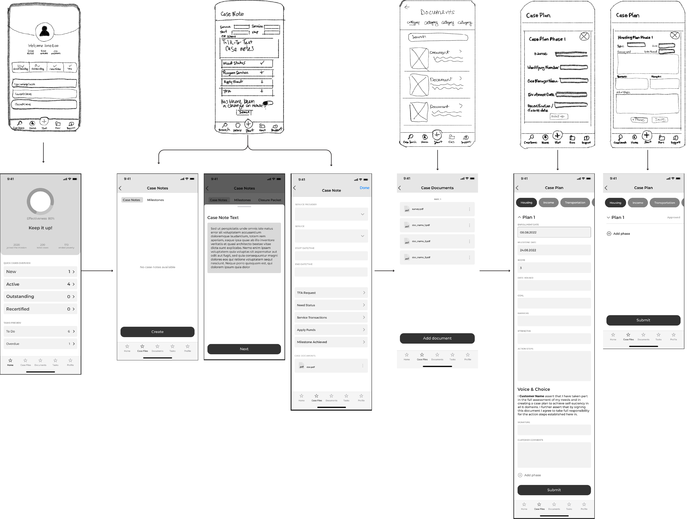
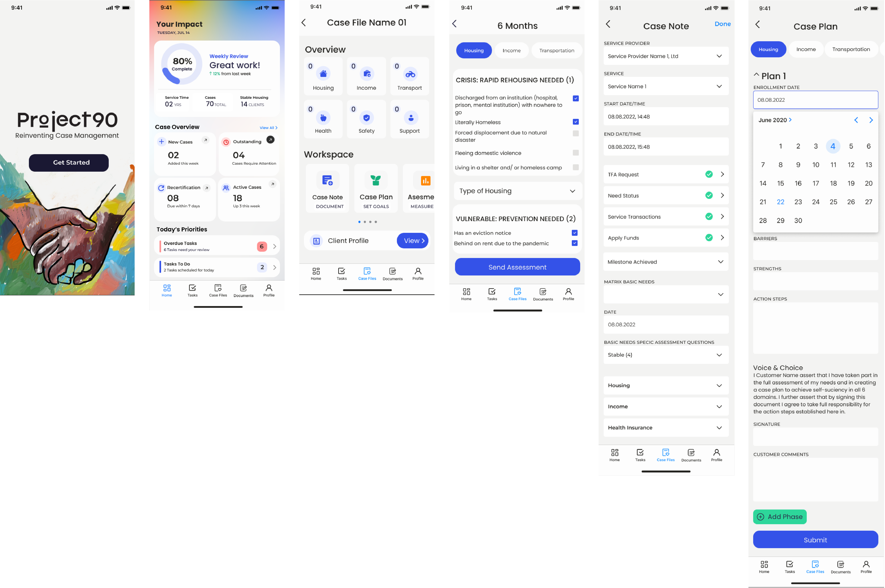
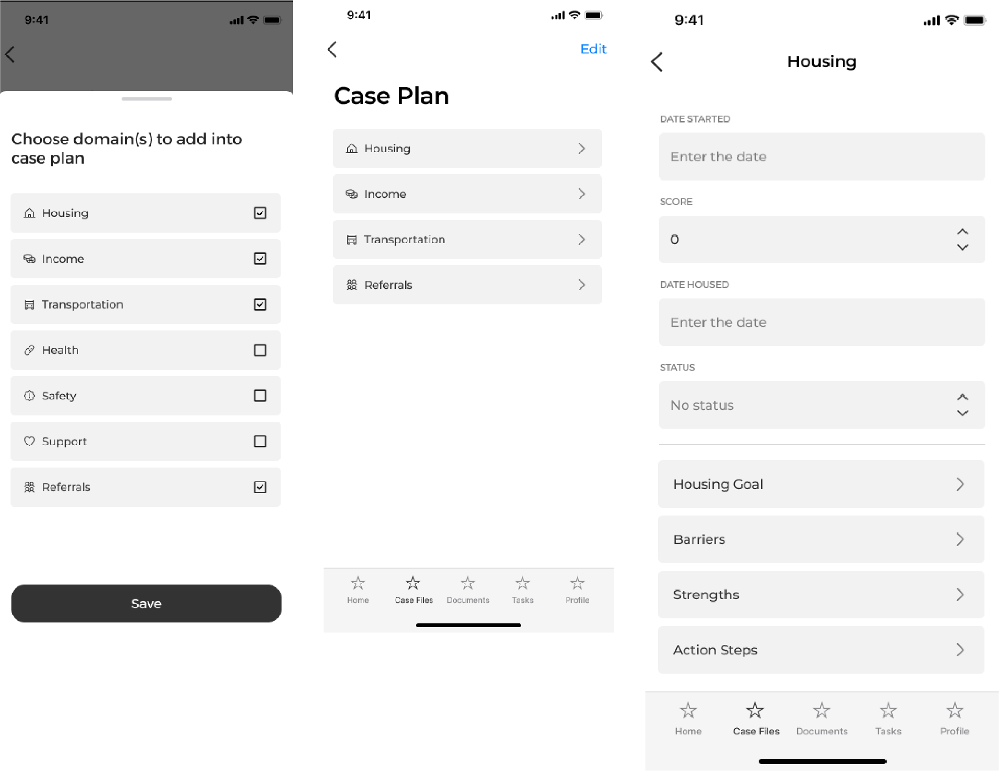
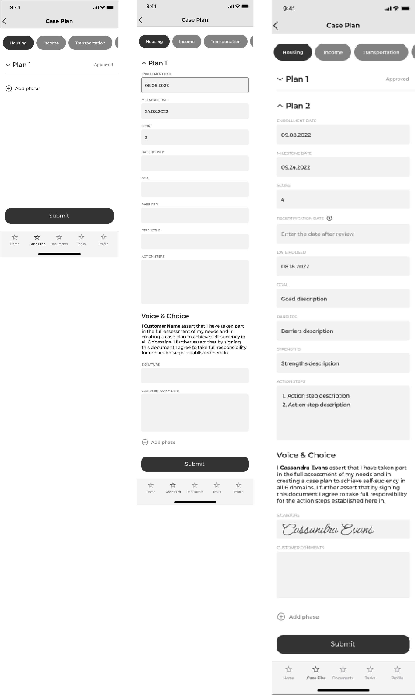

I designed a mobile-first case management workflow that helps
social-service case managers access client context, document field
interactions, and update progress in real time — replacing a
desktop-only system that delayed documentation and duplicated data
entry.
The Challenge
Case managers moved between appointments all day but worked in a
desktop-first system, so documentation was delayed, client context
was hard to reach in the field, and the same information often had
to be entered twice.
My Contribution & Approach
As UX/UI lead, I interviewed 25 case managers across shelters,
veteran homelessness programs, and HMIS-reporting housing services,
then translated the research into a mobile IA, wireframes, and a UI
system built around the five most frequent field tasks: client
snapshot, notes with talk-to-text, tasks, progress tracking, and
guided case-planning workflows.
Outcome
Focus-group testing pushed the case-plan workflow from a single
static form into a flexible, phase-based experience with goals,
barriers, milestones, and referrals. The MVP was completed and
internally tested; public launch was paused when program funding
was cut.
Timeline
6 months
Role
UX/UI Lead Designer
Platform
Mobile case-management app
Status
MVP completed & internally tested; funding lost before public launch.
~6 min read
00 / OVERVIEW
Mobile Case Management App
In this UX/UI case study, I designed a mobile-first case management
workflow that helps social-service teams access client records,
document field interactions, update progress, and complete essential
work in real time.
The Challenge
Case managers were constantly moving between appointments, often completing meaningful client work in the field before having to circle back later to review details, document case notes, update progress, manage next steps, and enter required information into government databases. Because the existing workflow was built primarily for desktop use, documentation was often delayed, context was lost, and the same information had to be entered more than once. The opportunity was to create a mobile first experience that made it easier to capture work in the moment while also giving case managers real time visibility into case performance, so they could see the progress they were driving and the impact they were creating for clients.
Timeline
6 months
Role
UX/UI Lead Designer
Platform
Mobile case-management app
Status
MVP completed and internally tested; not publicly launched due to
funding loss.
My Contribution
I collaborated with leadership and end users to gather requirements, worked alongside engineers to assess feasibility, and delivered final design recommendations that shaped the MVP. Research synthesis, workflow design, information architecture,
wireframes, UI design, prototyping, and usability iteration.
Design Goal
Help case managers complete high-frequency field tasks in the
moment with less administrative friction.
Project Toolkit
Slack
Trello
Microsoft Office
Microsoft Teams
Figma
FigJam
Adobe Color
Adobe Xd
InVision
Google Drive
Google Sheets
01 / DISCOVERY
Understanding Case Management Work
Research Activities
Reviewed common case-management tasks completed in the field.
Synthesized staff feedback around client notes, updates, tasks,
and information access.
Mapped the disconnect between desktop-first systems and
real-world field workflows.
Identified repeated friction around delayed documentation and double data entry.
Key Insights
Notes were often captured after the interactionClient context was difficult to access quicklyDuplicate data entry created reworkConnectivity could not always be assumedGuided workflows needed flexibility
Research Synthesis
I interviewed 25 case managers working across homeless shelters, veteran homelessness programs, and housing services that report to HMIS. I then synthesized their feedback into recurring themes, including delayed documentation, fragmented client information, duplicate data entry, and limited access to field-based workflows.
Discovery Artifact

Discovery Artifact

Case Manager Needs
The empathy map helped clarify the real-world constraints of field work:
case managers needed quick access to client context, flexible workflows,
and a faster way to capture accurate notes while moving between
appointments.
Discovery Artifact
Problem Statement: Case managers need a mobile-first way to access client context, document
interactions, update progress, and complete essential tasks while in the
field without relying on delayed notes, disconnected workflows, or repeated
data entry.
02 / IDEATION & DESIGN
Designing for Fast, Focused Field Work
The experience focused on the actions case managers needed most often,
while making essential client information easier to find and act on.
Design Flow
From research findings to a focused mobile workflow and UI system.
Research
Define
Prioritize
Flows
Wireframes
UI System
Feature Prioritization
Talk-to-text notes, client snapshot, task management, field document access, and guided note templates were included in the MVP. Government database integration was high-impact but dependent on integration, so it followed post-launch. Integrated client records, offline sync, KPI visibility, and advanced analytics were high-impact but low-feasibility, so they were deferred. Lower-impact items like FAQs, profile settings, ratings, recommendations, and the partner marketplace were logged as future-phase opportunities.
Strategy Artifact
Information Architecture
The app was organized around the actions case managers needed most:
reviewing client context, capturing a note, planning and updating progress, completing
tasks, and moving through guided service workflows.
Architecture Artifact

Flow Artifact

Client Interaction Flow
I mapped the core field workflow a case manager would take when reviewing client
context, documenting an interaction, attaching supporting information, and
identifying the next step. This helped keep the mobile experience focused
on the most frequent field tasks.
Wireframe Evolution
Home Screen
Early concepts prioritized a broad system overview and general KPIs. Focus-group feedback showed that case managers needed more immediate, action-oriented information.
The refined home screen introduced clear case-status visibility, including active, outstanding, and recertification states, alongside a task overview. These updates improved scannability and helped users quickly understand priorities and next steps.
Case Documentation
Initial case-note concepts focused on basic documentation. Research revealed that case managers needed faster ways to capture notes after field visits, complete funder-required information, and attach supporting documents.
The mid-fidelity workflow elevated talk-to-text as a primary action, added required funder fields and file attachments, and organized content into accordion sections. Chunking the form reduced visual fatigue and gave case managers a more flexible way to complete relevant documentation while moving efficiently through required steps.
Design Artifact

Final UI Artifact
Final Mobile Screens
The final version connected case notes and case planning into one
continuous workflow. Persistent domain tabs kept service areas
accessible, while goals, barriers, referrals, action steps, milestones,
status, and client acknowledgment were organized in one place. A new
home screen also provided performance feedback, upcoming tasks, and task
management tools, giving case managers a clearer view of both client
progress and daily priorities.

03 / VALIDATION
Evolving the Case Plan Workflow
Focus group sessions revealed that case planning needed to support more than completing a separate form for each service domain. Case managers required a flexible workflow that reflected how plans are created, reviewed, updated, and documented over time. The initial concept used a simple domain-selection flow, followed by individual forms for housing, income, transportation, and other needs. Through collaborative review, the workflow evolved to include:
Version 01
Domain-Based Planning
The first iteration used a simple domain-selection flow with separate
forms for each service area.

Final Iteration
A Complete Case Planning Workflow
Focus group feedback led to persistent domain tabs, multiple plan
phases, clearer status and milestone tracking, referrals, goals,
barriers, action steps, and client acknowledgment fields.

Outcome
I interviewed 25 case managers who worked across a range of field environments, including homeless shelters, street outreach, and encampments in the woods, before returning to the office to document. This mattered because notes were often partially completed in their vehicles between appointments, then re-entered, sometimes double or triple entered, across multiple databases once they were back at a desk. Participants said reporting requirements were extensive and that the standard three-phase case plan didn't reflect how cases actually evolved. Observing case managers write notes in transit and re-enter the same data into separate systems, I inferred that documentation needed to move with them rather than wait for a return to the office. These insights shaped three key decisions: talk-to-text and guided case note templates to ease in-field documentation, added case-plan phases to match real caseload complexity, and a consolidated case-plan view to cut down on redundant entry.
04 / REFLECTION
What I Learned
I began by treating case planning as a form-completion problem. Testing showed that it was actually a living workflow that crossed service domains, changed over time, and required shared accountability. That shifted the design from separate static forms to persistent domains, multiple plan phases, milestones, barriers, action steps, referrals, and client acknowledgment.
Next steps focused on the deferred and integration-dependent work: building out government database integration, and evaluating offline sync, KPI visibility, and advanced analytics for a future phase once the core mobile workflow was validated in the field.
Because the product was an internally tested MVP that never reached public rollout, real-world adoption, long-term data accuracy improvements, and the impact of these features on reporting outcomes remain unvalidated.